EE 306 : An Application of Bayes Theorem
We revisit the problem discussed in the lecture hours.
Assume that S is a binary random variable taking values 0 and 1 with the probability of p and q = 1 - p, respectively.
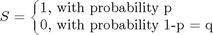
We observe not S, but its noise corrupted version:
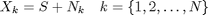
Here $X_k$ is the k'th observation. $N_k$ is the random variable representing noise which corrupts the signal S. We assume that the random variable $N_k$ is independent and identically Gaussian distributed with zero mean and variance $\sigma_n^2$,
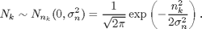
One can visualize the situation as follows. The transmitter sends either 1 or 0; which is the information bit to be delivered to the receiver. The receiver observes the signal S in the presence of noise. (The noise is Gaussian distributed as noted above.) Assume that $X_1$ is 1.01. If $S$ is 1, the noise $N_1$ has to be 0.01 to produce this observation. (Similarly, if $S$ is 0, the noise $N_1$ has to be 1.01 to produce the same observation.)
We would like to calculate the probability of $S$ given $X_1$, that is $f_{S|X_1}(s|x_1)$.
The distribution of the $S$ before we observe $X_1$ is called the a-priori distribution of $S$. From the problem statement, the a-priori density can be written as
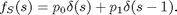
The conditional density $f_{S|X_1}(s|x_1)$ can be written as
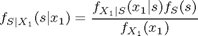
The density on the right, $f_{S|X_1 }(s|x_1)$ is called the posterior distribution. Stated differently, our goal is to calculate the posterior distribution.
From the observation model, the random X_1 given S=s is distributed as
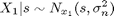
This result is easy to see, once we interpret this result as fixing the random variable S to a constant value shown as s. In other words, X_1 given S=s is a new random variable and the s is just a parameter of this distribution (it is not any more a random variable after fixing its value).
Then, the posterior density can be written as $f_{S|X_1 }(s|x_1)$
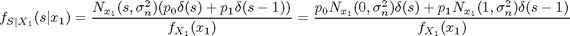
The denominator can be calculated from the relation
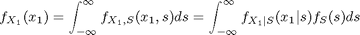
which is simply the integral of the numerator of the posterior distribution.
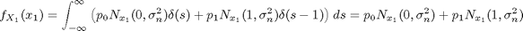
The posterior density can be finalized as
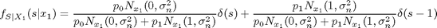
Note that, the posterior distribution updates the probability $S=0$ from $p_0$ to $\widehat{p}_0$ and similarly, $p_1$ to $\widehat{p}_1$ where
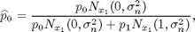
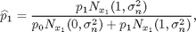
Hence, the prior density is updated from
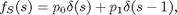
to the posterior
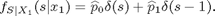
Now, we study this mentioned update numerically using MATLAB's computational facilities.
To do that, we first define the Gaussian distribution
pdfNormal = @(x,mu,var) 1/sqrt(2*pi*var)*exp(-(x-mu).^2/2/var);
Let's do a sanity check and calculate the area under the pdf. To do that we fix mean to zero and variance to 1 and calculate the area with quad function as follows:
area = quad(@(x)pdfNormal(x,0,1),-5,5),
area =
1.0000
It seems that everything is in order!
Let's define, the update equations:
update_p0 = @(p0,x1,sigma_n_sq) p0*pdfNormal(x1,0,sigma_n_sq)/... (p0*pdfNormal(x1,0,sigma_n_sq) + (1-p0)*pdfNormal(x1,1,sigma_n_sq)); update_p1 = @(p1,x1,sigma_n_sq) 1 - update_p0(1-p0,x1,sigma_n_sq); %
Let's take $\sigma_n^2 = 2$, and p0 = p1 = 1/2 (s=0 or s=1 is equally likely, a-priori.)
sigma_n_sq = 2; p0 = 1/2; p1 = 1/2;
For now, assume that the observation $x_1$ is 1.01. For this observation, the updated probabilities can be calculated as
x1 = 1.01; [update_p0(p0,x1,sigma_n_sq) update_p1(p1,x1,sigma_n_sq)]
ans =
0.4366 0.5634
Given, the observation of x1=1.01; the updated probability for s=1 is increased from its a-priori value of 0.5 to 0.5634. The increase is not significant for this case. This is due to large noise variance.
Let's decrease the noise variance and repeat the same experiment:
sigma_n_sq = 1; x1 = 1.01; [update_p0(p0,x1,sigma_n_sq) update_p1(p1,x1,sigma_n_sq)]
ans =
0.3752 0.6248
sigma_n_sq = 1/2; x1 = 1.01; [update_p0(p0,x1,sigma_n_sq) update_p1(p1,x1,sigma_n_sq)]
ans =
0.2650 0.7350
sigma_n_sq = 1/4; x1 = 1.01; [update_p0(p0,x1,sigma_n_sq) update_p1(p1,x1,sigma_n_sq)]
ans =
0.1151 0.8849
Note that, with 95% percent probability, a random pick from Gaussian distribution lies in two standard deviations of the mean value. Then, for the last case of $sigma_n_sq = 1/4$, the two standard deviation interval around the mean is [-1,1]. Hence, 95% percent of time, we can not see the observation of $x_1 = 1.01$, for $s=0$.
In short, as the noise variance decreases, the probability of having a large valued noise also decreases and observing $x_1=1.01$ for the event of $s=0$ becomes less and less likely.
Let's use a high noise variance and make multiple observations on the unknown symbol S. Let's take $\sigma_n_sq = 4$ and generate 5 noisy observations on $S$.
Without any loss of generality, let's examine the case of $s=0$
sigma_n_sq = 4; s = 0; x = zeros(1,5); for k=1:5, x(k) = s + sqrt(sigma_n_sq)*randn(1); end; x,
x = -2.0580 0.4862 -2.5132 -0.6944 -1.8827
It can be noted that the observations are large valued due to large noise variance.
We would like to estimate the s value given the observations. In other words, we would like to evaluate
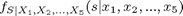
To evaluate the posterior density with 5 observations, we can do the updates in a recursive fashion. That is, we first find
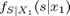
then treat the updated probabilities of $\widehat{p}_0$ and $\widehat{p}_1$ as the prior probabilities before the observation of $X_2$ and generate $ f_{S|X_1,X_2}(s|x_1,x_2) $.
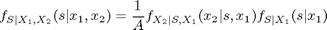
where $A$ is a constant normalizing the density to unit area. Note that the knowledge of $s$ and $x_1$ is equivalent to the knowledge of $s$ and $n_1$. The knowledge of $n_1$ (noise of the first observation) does not help at any other observations, since noise is independent at every observation. Hence, we can discard the knowledge of $x_1$ in the following relation, since it does not affect the density on the right hand side:
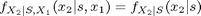
With this observation, we can write the posterior density as

In the last equation $f_{S|X_1}(s|x_1)$ is the updated density after the observation of $x_1$ which is the a-priori information before processing the second observation $x_2$. The other term $f_{X_2|S}(x_2 | s)$ is identical to the term appearing in the update equation for the single observation case.
Hence, the only change between single observation and multiple observation case is taking the aposteriori distribution of the earlier iteration as the apriori density of the next iteration.
Given this discussion, we can calculate the posterior probability after each observation as:
p0old = 1/2; p1old = 1/2; for k=1:5, p0_posterior(k) = update_p0(p0old,x(k),sigma_n_sq); p1_posterior(k) = update_p1(p1old,x(k),sigma_n_sq); p0old = p0_posterior(k); p1old = p1_posterior(k); end; p0_posterior,
p0_posterior =
Columns 1 through 12
0.6546 0.6554 0.8016 0.8449 0.9081 0.3406 0.3572 0.4853 0.4320 0.7376 0.6600 0.6635
Columns 13 through 24
0.6622 0.5477 0.6115 0.6559 0.8031 0.9139 0.9448 0.9439 0.9616 0.9822 0.9734 0.9834
Columns 25 through 30
0.9854 0.9871 0.9899 0.9892 0.9916 0.9968
We can note that as more and more observations are collected, the probability of making correct decision increases.
Let's repeat the same example with 30 observations
sigma_n_sq = 4; s = 0; x = zeros(1,30); for k=1:30, x(k) = s + sqrt(sigma_n_sq)*randn(1); end; x,
x =
Columns 1 through 12
-2.3491 -2.0423 -0.8033 0.3473 -0.2322 2.1282 -0.4908 -3.0351 0.0195 0.1427 0.6331 0.9997
Columns 13 through 24
2.5562 -1.0956 0.5216 -0.0264 -1.1605 4.2726 -0.5152 -2.8191 3.5402 0.6511 -2.2381 1.2407
Columns 25 through 30
2.5396 -1.7921 0.2704 -0.2781 -2.3268 2.3674
Let's do the posterior calculation:
p0old = 1/2; p1old = 1/2; for k=1:30, p0_posterior(k) = update_p0(p0old,x(k),sigma_n_sq); p1_posterior(k) = update_p1(p1old,x(k),sigma_n_sq); p0old = p0_posterior(k); p1old = p1_posterior(k); end; p0_posterior, % The main goal of communication systems is to establish a reliable % communication between parties with a minimal repetition of the % transmitted symbols, that is at a highest rate possible. %
p0_posterior =
Columns 1 through 12
0.6709 0.7938 0.8421 0.8471 0.8693 0.8158 0.8501 0.9321 0.9393 0.9442 0.9424 0.9353
Columns 13 through 24
0.8963 0.9279 0.9276 0.9359 0.9568 0.8960 0.9174 0.9622 0.9225 0.9198 0.9579 0.9497
Columns 25 through 30
0.9190 0.9527 0.9552 0.9628 0.9813 0.9705